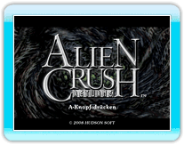
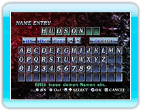
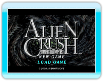

9 |
Bevor es losgeht |
 |
Im Titelbildschirm, drücke
Wenn du das erste Mal spielst, wirst du aufgefordert einen Spielernamen einzugeben. Der Name darf bis zu 8 Zeichen lang sein.

Gibt es bereits gespeicherte Daten, kann entweder NEW GAME oder LOAD GAME ausgewählt werden. Um mit einem Spiel fortzufahren, wähle LOAD GAME. Wähle NEW GAME, um ein neues Spiel zu starten.
● STORY MODE
● ARCADE MODE
● VERSUS MODE
● RANKING MODE
● OPTION MODE |
 |
 |
 |